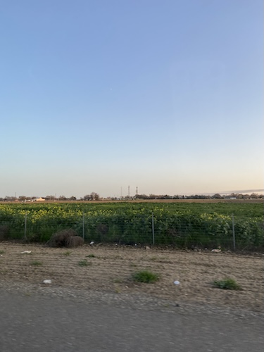

I enjoy documenting my life through photos so I can look back on them and remember what I was doing then, whether it is hanging out with friends or watching a new show, I most likely have a photo. I also enjoy taking photos of scenery and things I find cute (such as my cats, I have way too many photos of my cats…).